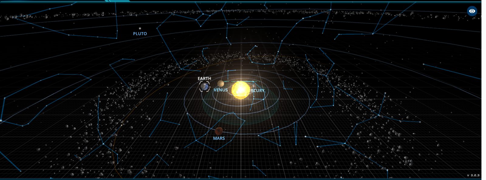
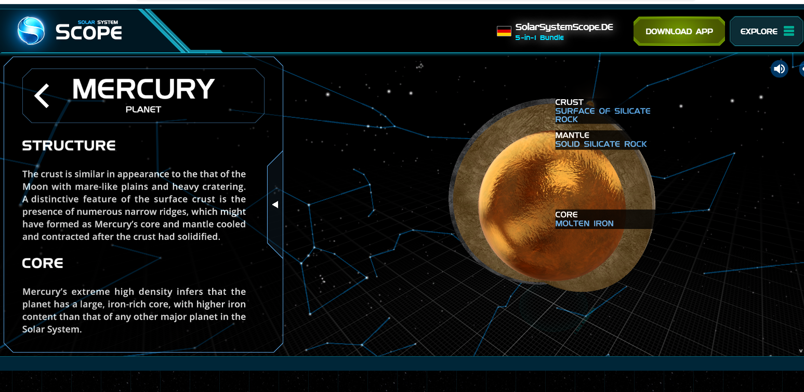

☀️ A Naprendszer
A Naprendszer középpontjában a Nap található, amely körül nyolc bolygó és számos kisebb égitest kering. A Naprendszer a Tejútrendszer egyik részén helyezkedik el.
🪐 A Naprendszer bolygói
☿ Merkúr
A Merkúr a Naphoz legközelebbi bolygó. Kicsi, sziklás felszínű égitest, és mindössze 88 nap alatt kerüli meg a Napot.
♀ Vénusz
A Vénusz mérete hasonló a Földéhez. Rendkívül sűrű légköre miatt azonban a felszíne nagyon forró.
🌍 Föld
A Föld az otthonunk. Jelenleg ez az egyetlen bolygó, amelyről bizonyítottan tudjuk, hogy élet található rajta.
♂ Mars
A Mars vöröses színéről ismert. Felszínén hatalmas vulkánok, kanyonok és egykori víz nyomai találhatók.
♃ Jupiter
A Jupiter a Naprendszer legnagyobb bolygója. Híres hatalmas viharrendszeréről, a Nagy Vörös Foltról.
♄ Szaturnusz
A Szaturnusz látványos gyűrűrendszeréről híres. A bolygó főként hidrogénből és héliumból áll.
♅ Uránusz
Az Uránusz különleges tengelyferdesége miatt szinte az oldalán forog a Nap körül.
♆ Neptunusz
A Neptunusz a Naprendszer legtávolabbi bolygója. Nagyon hideg és erős szelek jellemzik.
☿ A Merkúr
Itt a Merkúrt láthatjuk:

A Merkúr a Naprendszer legkisebb bolygója és a Naphoz legközelebbi bolygó. Nincs jelentős légköre, ezért a nappali és éjszakai hőmérséklet között hatalmas különbség lehet.
🔭 Fedezd fel a Naprendszert!
A Solar System Scope segítségével interaktívan is felfedezheted a Naprendszert, és közelebbről megismerheted a bolygókat.
🚀 Solar System Scope megnyitása